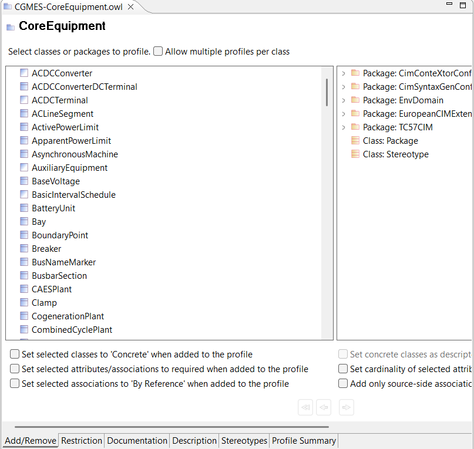
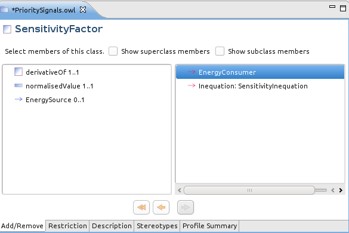
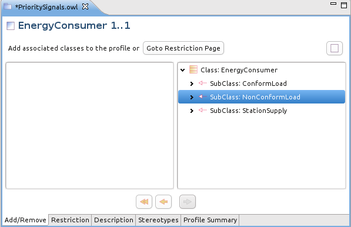

Add/Remove Tab
The Add/Remove tab is the first tab of the Profile Editor and the place where you choose what goes into a profile. It shows the profile on the left and the schema (the CIM and any extensions) on the right. You add schema classes, attributes and associations to the profile by moving them from right to left, and remove them by moving them back.

Interim screenshot, to be replaced: the Add/Remove tab with the profile itself selected. The left pane lists the profile's classes, the right pane lists the schema's packages, and the option checkboxes sit below both panes. The final screenshot will use a wider editor so the right-hand column is not cut off.
Working from the Outline View
The Add/Remove tab always works on the element selected in the Outline view. What the tab offers depends on that selection:
| Selected in the Outline | The tab shows | Extra controls |
|---|---|---|
| The profile itself (the top element) | "Select classes or packages to profile." The right pane lists the schema's packages and classes. | Allow multiple profiles per class; Search Schema |
| A class in the profile | "Select members of this class." The right pane lists the class's attributes and associations. | Show superclass members; Show subclass members |
| An association in the profile | "Add associated classes to the profile or" go to the Restriction tab. The right pane lists the classes the association can refer to. | Goto Restriction Page; Create a local, anonymous profile class |
| An attribute in the profile | "The datatype name will be added to the profile." | Goto Restriction Page |
| Anything else | "Select another item in the profile outline". |
Double-clicking an element in the left pane selects it in the Outline, so you can work down from the profile to a class and then to its members without leaving the tab.

Placeholder from the legacy help, to be replaced: the Add/Remove tab with a class selected. The right pane lists the class's members that are not yet in the profile, above the Show superclass members and Show subclass members checkboxes and the add and remove buttons.

Placeholder from the legacy help, to be replaced: the Add/Remove tab with an association selected. The right pane lists the classes the association can refer to, including subclasses, beside the Goto Restriction Page button.
Adding and Removing
Select one or more items in the right pane, then use the buttons between the panes:
| Button | Effect |
|---|---|
| Add the selected items to the profile | Adds the selected classes, attributes or associations. A selected package adds every class in it. |
| Add the selected classes to the profile including members | As above, but also adds the attributes and associations of each class added. |
| Remove the selected items from the profile | Removes the items selected in the left pane. |
| Create a local, anonymous profile class | When an association is selected in the Outline, adds the selected class as an anonymous class used only by that association, instead of a named class. See Associations and Anonymous Classes. |
If one addition would add 100 or more elements, CIMTool asks you to confirm before going ahead.
Normally a schema class can be added to a profile only once. Selecting Allow multiple profiles per class lets you add it again as a separate profile class. See Multiple Profiles.
Options Applied When Adding
The checkboxes below the panes apply to the next addition only. They are cleared again after each addition. Some of them mean slightly different things depending on what the profile is designed to generate; see Profile Targets.
| Option | Effect on the items added |
|---|---|
| Set selected classes to 'Concrete' when added to the profile | Marks added classes as concrete, so that the generated schema allows instance data to declare objects of that class. |
| Set concrete classes as descriptors when added to the profile | Also gives those concrete classes the Description stereotype, an IEC convention for RDFS target profiles described on the Restriction tab. Available only when the Concrete option is selected. |
| Set selected attributes/associations to required when added to the profile | Makes added attributes and associations required (a minimum cardinality of 1). |
| Set cardinality of selected attributes/associations to that defined in the schema | Copies the schema's cardinality to the added attributes and associations. |
| Set selected associations to 'By Reference' when added to the profile | Marks added associations as By Reference. The schema generated from the profile then defines each such association as a reference, so that instance data conforming to that schema identifies the associated object instead of containing it. What that means for the instance data depends on the profile's target:
|
| Add only source-side associations when added to the profile | Adds only associations for which the class is the source side, leaving out the opposite role of each association. See Source and Target Sides of an Association. |
Source and Target Sides of an Association
When an association is added to a profile, it is added to one of the two classes it connects. That class is the source side: the association starts from it. The class at the other end is the target (or destination) that the association points to.
When profiling for RDFS, the usual convention for an association whose role ends are 0..* and 0..1 is to make the class at the 0..* end the source side, and add the association there, so that it points to the class at the end with the narrower cardinality. Each instance of the source class then refers to at most one target.
Anonymous classes are never concrete, so the Concrete option is ignored when you create one. Each setting can be changed afterwards on the Restriction tab.
Finding a Class
When the profile itself is selected in the Outline, Search Schema opens the search wizard. Choosing a result highlights it in the right pane, ready to add. See Searching Schemas and Profiles.